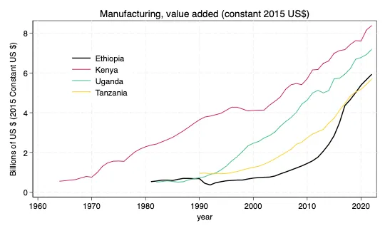
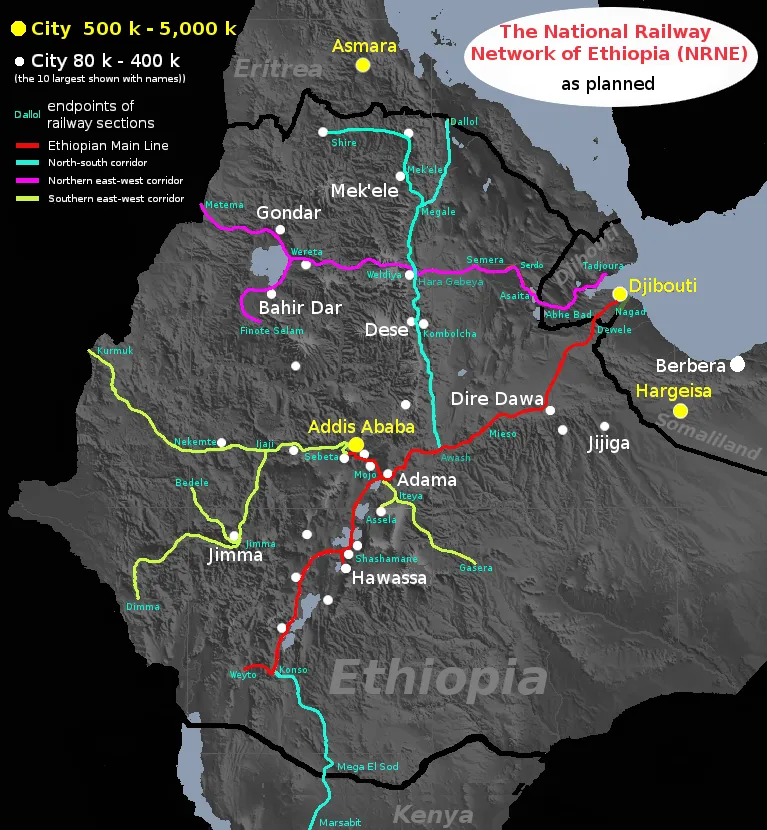
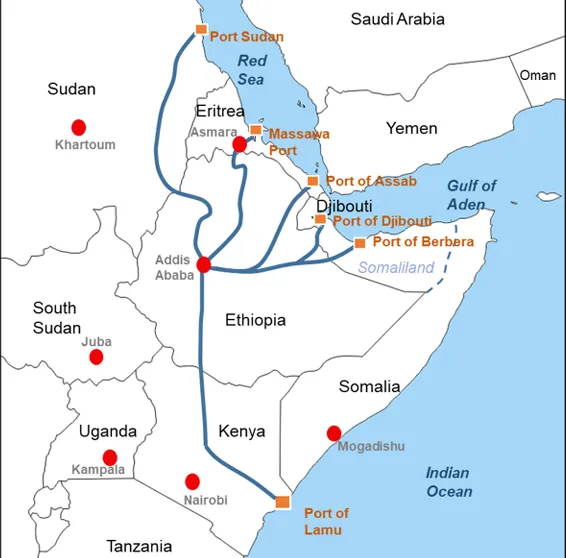
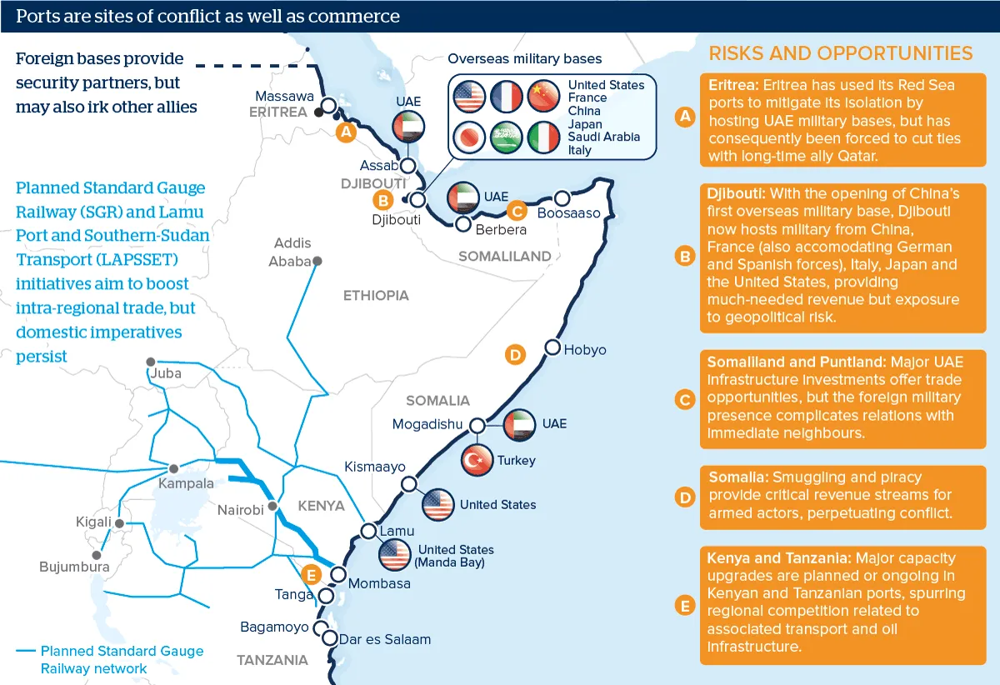

18 Ethiopia
18.1 Landlocked
Opalo
Ethiopia’s economic case for reliable and cost-effective seaport access is strong. In order to secure its economic future, the country must minimize or completely erase the economic costs associated with being landlocked. Overall, landlocked countries tend to be 20% less developed than they would be if they had access to the sea. This is partially due to cost of trade, with transportation costs being between 50%-262% higher for landlocked countries.
Given the significant economic costs associated with being landlocked, it is a no-brainer that for Ethiopia to achieve its ambitious developmentalist agenda — which will necessarily require export-oriented industrialization and improved agricultural productivity — it needs to have more control over trade-related costs and policy (or procure stability on both fronts from its neighbors). According to the Ethiopian government, transportation costs gobble up 16% of the value of international trade (which seems really high). Foreign trade currently amounts to 24% of GDP, and needs to grow by orders of magnitude. With an annual output of US$127b, Ethiopia is already Eastern Africa’s biggest economy (Kenya is second at US$113b) but with lots of low-hanging opportunities for even bigger trade-driven output.
Last year Djibouti cut stay of cargo days from 45 to 8 days. In addition, the port is more expensive relative to neighbors, often lacks storage space, and suffers from untimely availability of empty containers for exports. These factors have are the motivation behind Ethiopia’s aggressive port diversification initiative. As of early last year, Djibouti City’s share of Ethiopian trade cargo had declined from 95% to just under 86%, with the Kenyan border Moyale dry port (0.02%), Somaliland’s Berbera (5%), and Djibouti’s Tadjoura (9.6%) emerging as alternatives. These latter routes, however, lack the infrastructure (roads, petrol stations, service and repair stops, etc) to support bulk haulage logistics.
Over the last decade Ethiopia has quintupled its industrial output and is quickly catching up with its regional neighbors.

The agricultural sector, which still has a commanding share of exports. Agriculture accounts for nearly 38% of GDP (including 50% of manufacturing production), 80% of employment, and about 90% of forex earnings.

Yet while it is plausible that Addis Ababa would find reason to tie Eritrea economically to itself as a means of guaranteeing future peace, the medium term unpredictable political environment in Asmara exposes Ethiopia to hold-up problems once the port and logistics infrastructure are in place. Choosing Berbera would also be risky as it would drive a wedge between Addis Ababa and Mogadishu, and risk inviting attacks from Somalia nationalists. These are good reasons to use these ports as means of diversification but not as principal ports. The same goes for the third-tier options of Lamu and Port Sudan, which also come with security risks — potential attacks by Al Shabab in along the route from Lamu, and conflicts and hold-up problems in Sudan.

In ascending order of distance from Addis Ababa (see below), the options include: Djibouti (867km), Tadjoura (880km), Assab (883km), Berbera (936km), Lamu (1279km), Massawa (1317km), and Port Sudan (1770km).
The economic case for an Ethiopia navy
Ethiopia exists in a geopolitical neighborhood racked by security threats. This reality goes back centuries and shaped the evolution of Ethiopia’s transport infrastructure, a fact illustrated by Abiy’s invocation of Ras Alula Abanega. Therefore, no one should be surprised than a history-conscious elite in Addis Ababa would find reason to build the military capacity needed to protect Ethiopian economic interests.
To this end, Ethiopia’s leadership should learn the right lessons from the two times in the modern period that the country acquired access to the sea: diplomacy backed by a military guarantee works better than naked coercion.
Emperor Yohannes famously resisted the construction of railways, fearing that such an innovation would expose Ethiopia to foreign influence and eventual domination. Even Menelik II, the Great Modernizer (and imperial expansionist), feared that building a railway to the coast would lower the cost of a foreign invasion (at the time the Ottomans, Egypt, Mahdist Sudan, and Italians were the main threat). He must have remembered that when the British invaded Ethiopia in 1868 under Tewodros II’s watch, Napier had built a temporary railway to transport troops and weapons on the coastal plain (the track was dismantled after Napier’s departure). One of the emperor’s advisers sent him a grim warning:
When the railway reaches Harar, Harar will be no longer yours, and when it reaches Addis Ababa, Shoa will be no longer yours.
Menelik eventually concluded that the economic benefits of a railway to a seaport outweighed the security risks. Some have argued that it helped that he came from Shoa, an imperial province that leveraged its autonomous status to promote international commerce:
since the time of Prince Abiyye who won the battle with the royal troops from Gondar in the middle of the 18th century, [Shoa] was attractive for the European and Muslim traders because of the uniform customs charges and sensible regulations issued by its princes who were fully aware of the inconveniences of mule transport and its costs that greatly hindered the trade in various commodities such as coffee, ivory, wax or hides and skins.
A delicate balancing of competing European imperial powers dictated the construction of the first railway line to the coast. Italy had already grabbed Eritrea, a fact that foreclosed on any links to either Massawa, Assab, or Zula. The British, ever focused on controlling the headwaters of the Nile, were more interested in linking Ethiopia to the sea through Sudan and ensuring that the Ethiopian state did not become a French pawn. Understandably, Ethiopia was suspicious of opening itself up to dependence on Egypt. Eventually, British investors settled on balancing French interests in the wider region by acquiring shares in a line constructed by the French through their colony of French Somaliland (Djibouti).
Ethiopia and the French firm Duparchy and Vigouroux signed a contract in January 1896. However, the French delayed any financial commitments until Italy’s quest to conquer Ethiopia was put to the test (the matter was famously settled two months later in Adwa). The solution of the Italian problem generated new French problems. France was keen on neutralizing Ethiopia as a state power and dividing it up into European spheres of influence (with the Brits and Italians). Menelik, the British, and even the Italians did not like this plan (control of Ethiopia’s main transportation artery gave France a massive advantage). The back-and-forth on this question, and Menelik’s willingness to delay construction to get his way, partially explains why it took two decades to finish construction. Even after completion, the substantial taxes demanded by France made the line one of the most expensive freight lines in the world — a fact that certainly slowed down Ethiopian economic performance in the late imperial years.
Fascist Italian occupation after 1937 came with a road link to Assab, thereby giving Ethiopia an alternative sea route. This arrangement persisted throughout the British mandate in Eritrea (1941-1952). Following the creation of the Federation of Ethiopia and Eritrea (1952-1962), the imperial government diverted trade from Djibouti to the ports in Massawa and Assab. It also established a navy in 1955, headquartered in Massawa. This arrangement persisted after Ethiopia dissolved the federation and annexed Eritrea outright (1962-1991). By the 1970s, Assab had supplanted Djibouti as Ethiopia’s primary seaport. Unfortunately for Addis Ababa, annexation ignited an armed rebellion that culminated in Eritrean independence in 1993 after almost three decades of war.

Contemporary Ethiopia faces similar geopolitical challenges. The port of Djibouti, its most important access to global markets, is crowded with foreign naval bases that could some day be used as tools of coercive diplomacy against Addis Ababa (see above). Under the circumstances, it would be negligent of Ethiopia’s leadership to not consider investing in a navy — if only to ensure that the country gets a seat at the table when matters related to Red Sea and Indian Ocean sea lanes are discussed.
Egypt is Addis Ababa’s most important geopolitical rival. While much of the rivalry is focused on the Nile and influence in Khartoum and Juba, the two countries also compete for the title of pre-eminent African Red Sea power. Egypt currently enjoys a significant lead. It has the largest navy in Africa (12th largest globally), with an economy almost four times larger than Ethiopia’s.
The Imperial Ethiopian Navy (1955-1974) was mostly a prestige pastime for Emperor Haile Selassie. The nepotistic circumstances of its founding (it was headed by the emperor’s grandson between 1958-1974), its use largely as a nationalist symbol of modernization throughout the late imperial era, and the attempted development and gradual degradation under an inwardly-focused Derg may persuade some of the disutility of an Ethiopian blue water navy. However, it would be a mistake to project the same conclusions on the current Ethiopian state.